גלריה
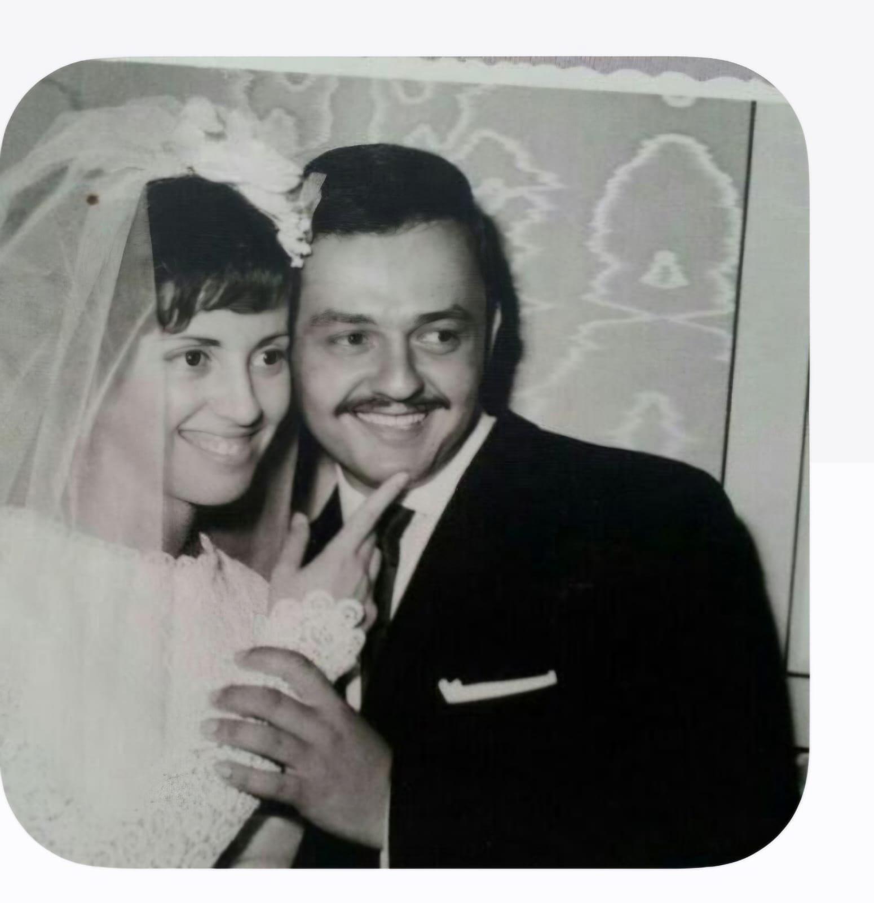
 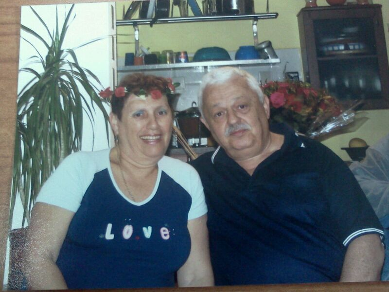
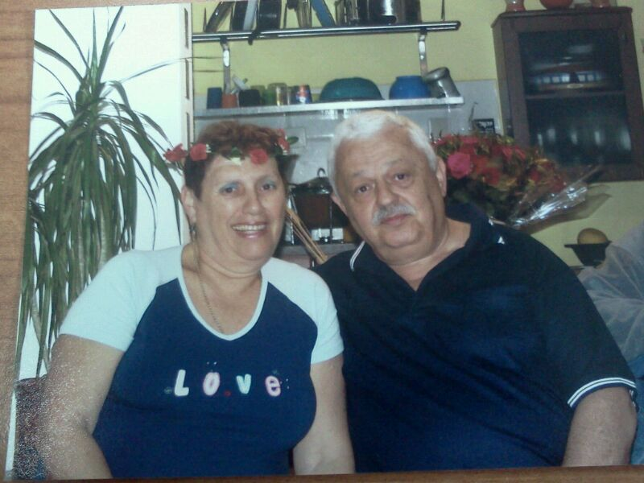
 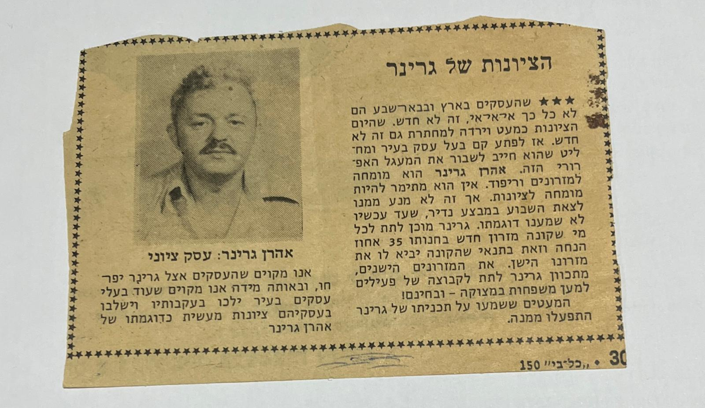
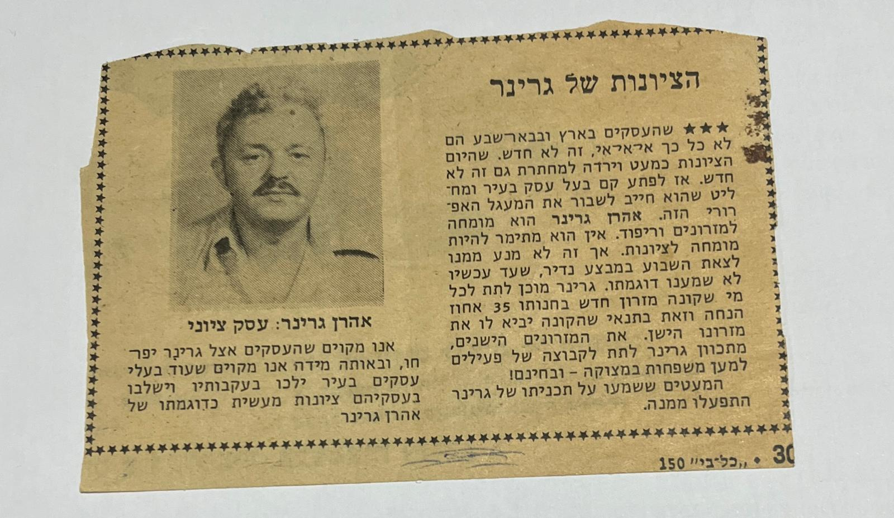

 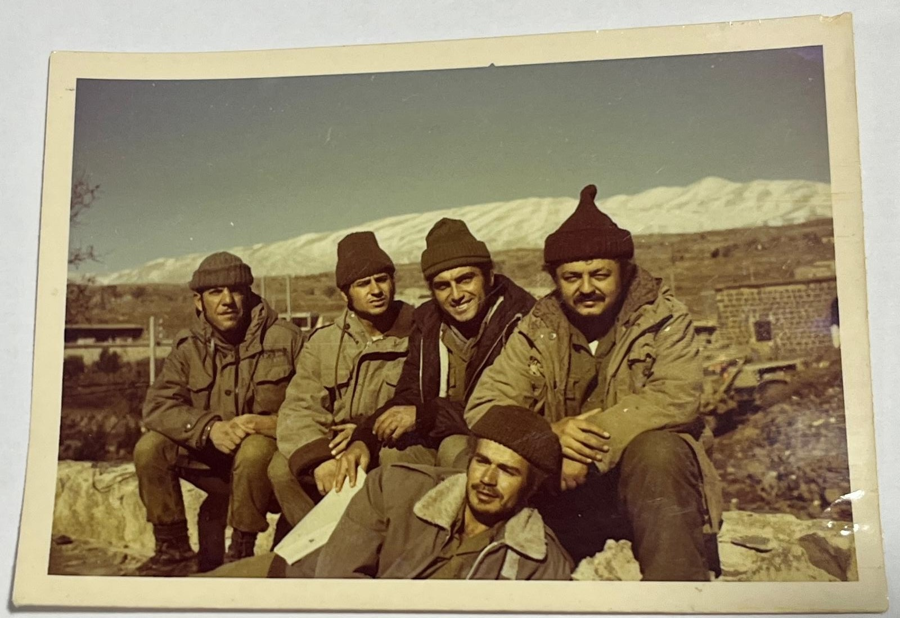
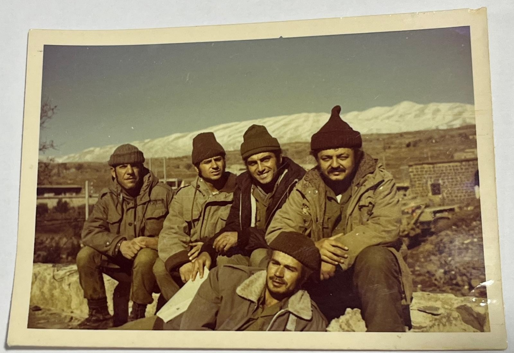

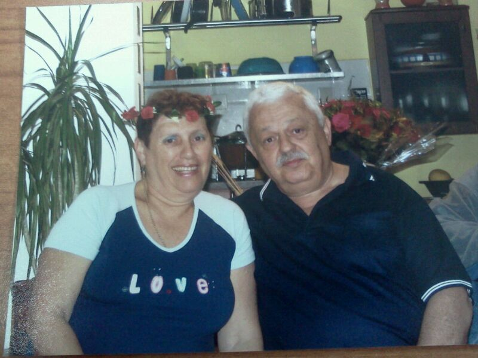
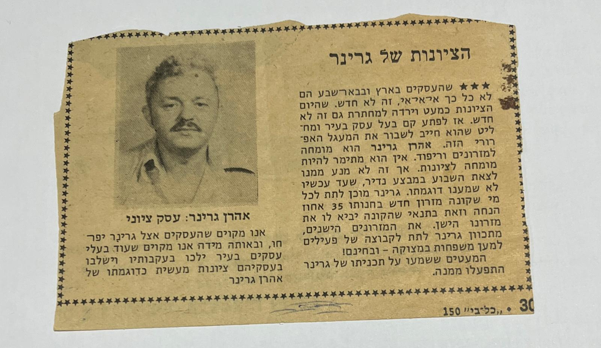
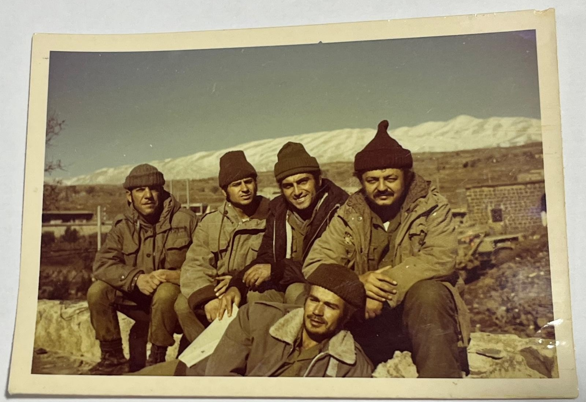
אהרון גרינר, נולד ב-19.02.1944, בסיביר אשר ברוסיה במהלך הבריחה של הוריו מידי הנאצים. הוריו לאה ושמעון, ילידי פולין אשר מרבית בני משפחתם נספו בשואה, הצליחו להימלט ולהקים משפחה. בתחילת חייו במשך שנתיים גרו הוא והוריו במחנה פליטים כשאביו עבד בעבודות כפייה במכרה פחם. לאחר כשנתיים הם הורשו לעזוב וחזרו לאירופה, לא לפולין אלא לגמרניה שם רכזו את היהודים במחנות עלייה. במהלך התקופה במחנות העלייה נולדה גם אחותו פנינה. לאחר כשנתיים הם הורשו לעזוב וחזרו לאירופה, לא לפולין אלא לגמרניה שם רכזו את היהודים במחנות עלייה. במהלך התקופה במחנות העלייה נולדה גם אחותו פנינה.
ב-1948 לאחר ציפיה ארוכה עלו לארץ באונייה אשר שמה ״נגבה״ ושוכנו במעברה בפרדס חנה. בהמשך עברה משפחתו לשכונת נווה צדק בתל אביב שם נולד אחיו הקטן משה. תקופה זו אופיינה כתקופת צנע כאשר כל משפחה קיבלה תלושים לקנית מזון שלא הספיק עבור אבל זה מה שהיה. אהרון למד בבית הספר הממלכתי דתי ״תחכמוני״ (שלמדו בו רק בנים) שבתל אביב. בנוסף, היה חבר בתנועת נוער הצופים ואף הדריך חניכים צעירים, שם פגש גם את מינה כץ שלימים נהייתה אישתו.
בגיל 18 התגייס יחד עם חבריו מהצופים לנח״ל לאחר הטירונות אותה העבירו במחנה 80, הם עברו להתגורר בקיבוץ סעד כחלק מפעילות הגרעין. בקיבוץ למד את מקצוע הרפתנות ואהב מאוד את החיים בקיבוץ והעבודה ברפת. כאשר במהלך התקופה בסעד הוא וחבריו ועברו הכשרת לוחמים. במהלך שירותו הצבאי לחם במלחמת ששת הימים ולאחר מכן כמילואימניק במלחמת יום כיפור. שבועיים אחרי סיום מלחמת ששת הימים שהוא בן 23 התחתן עם מינה אשר מספרת כי לא ידעה האם הוא יחזור בזמן לחתונה.
לאחר החתונה עברו הזוג הצעיר להתגורר בחולון, שם עבד כמוכר בחנות רהיטים בתל אביב ונולדו שתי בנותיו הראשונות, גלית ולאחר וטלי. ב-1975 עברה המשפחה להתגורר בבאר שבע מפני שרצה לעבוד עם אביו, אשר לו הייתה מרפדיה בעיר העתיקה של באר שבע. בהמשך נפרדו דרכיהם והוא פתח חנות רהיטים. במהלך הזמן בבאר שבע נודלו לו שתי בנות נוספות, מירב וליאת. חנות הרהיטים שפתח נקראה ״גרינר״ כשם משפחתו והייתה מאוד ידועה בבאר שבע לאורך השנים. את החנות ניהל לאורך כל התקופה, וכל משפחתו עזרה לו, אשתו עזרה לו בניהול החנות וכל בנותיו עבדו בה בילדותן.
כיום מתגורר ביחד עם אישתו בגני עומר שזה כפר לגמלאיים עצמאים, שם הוא מעביר את זמנו בשחיות והליכות יום יומית ובחוגים המוצעים.
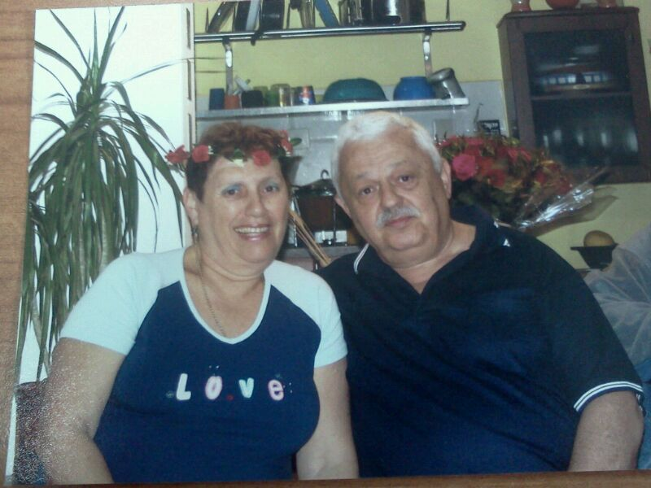
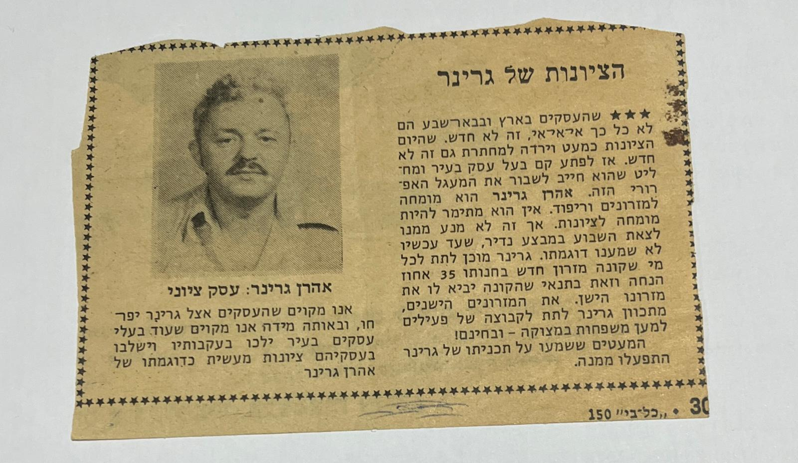
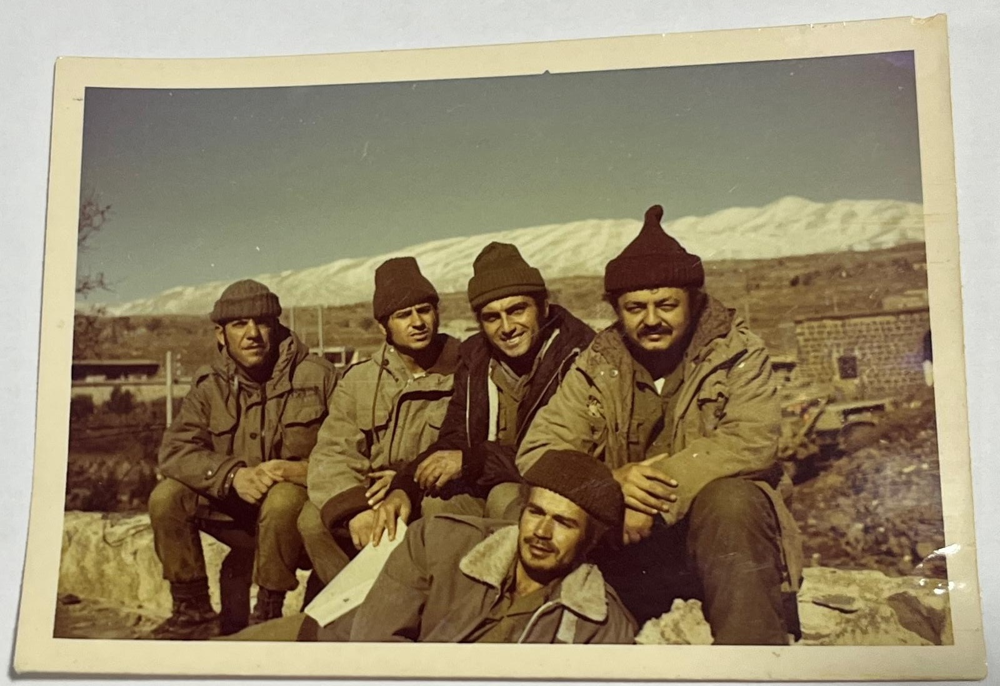

Likes: 0
שלושה הבדלים מרכזיים בין גרסאות ה-web השונות:
נבחר בתרחיש שימוש שבו משתמש מחפש באינטרנט מתכון להכנת עוגה מסוימת. נסקור את ההבדלים בין הרשתות בתרחיש זה: